Material to support teaching in Environmental Science at The University of Western Australia
Material to support teaching in Environmental Science at The University of Western Australia
Units ENVT3361, ENVT4461, and ENVT5503
Time Series Analysis
Concepts using soil temperature data
Andrew Rate
2026-11-08
This guide is organised into 3 main sections:
Set up the R environment for time series analysis
We will need the additional functions in several R packages for specialized time series and other functions in R...
...you may need to install them. You can skip the
if(!require(packageName)) if you know your computer already
has them installed.
# Conditionally install packages if they don't exist on your computer...
if(!require(zoo)) install.packages("zoo")
if(!require(tseries)) install.packages("tseries")
if(!require(Kendall)) install.packages("Kendall")
if(!require(trend)) install.packages("trend")
if(!require(forecast)) install.packages("forecast")
if(!require(lmtest)) install.packages("lmtest")
if(!require(car)) install.packages("car")
if(!require(viridis)) install.packages("viridis")
if(!require(ggplot2)) install.packages("ggplot2")
# Load the packages we need
library(zoo) # for basic irregular time series functions
library(tseries) # for assessing stationarity using Augmented Dickey-Fuller test
library(Kendall) # for trend analysis with Mann-Kendall test
library(trend) # for trend analysis using the Sen slope
library(forecast) # for time series forecasting with ARIMA and exponential smoothing
library(lmtest) # for Breusch-Pagan heteroscedasticity test etc.
library(car) # for various commonly-used functions
library(viridis) # accessible colour palettes e.g. viridis, plasma, ...
library(ggplot2) # alternative to base R plots
# (optional) make a better colour palette than the R default!
# use viridis for palette accessible to colour vision impairment
# the palette below shows the colours we get when...
palette(c("black","#0D0887","#5302A3","#8A09A5","#B7318A",
"#DA5B6A","#F3864A","#FEBA2C","darkgray","white"))
1. How R reads and stores time series data
We first read the data into a data frame – this is how R
often stores data – it's not the format we need, but we'll use it for
comparison.
The data used are derived from autumn 2014 soil meteorological observations at the Murrumbidgee M2 (Canberra Airport) site, available in the OzNet data archive, and described by Smith et al. (2012). We will use a curated subset of the soil temperature data at a single depth (15 cm).
Non-time series object for comparison
git <- "https://raw.githubusercontent.com/Ratey-AtUWA/Learn-R-web/main/"
soiltemp <- read.csv(paste0(git,"soiltemp2.csv"))
colnames(soiltemp) <- c("Date","temp") # simplify column names
Do some checks of the (non-time series) data
summary(soiltemp) # simple summary of each column
cat("\n") # separate output with a blank line
str(soiltemp) # more detailed information about the R object
# ('str'=structure, i.e. how the data are organised in the R object)## Date temp
## Length :1464 Min. :10.40
## N.unique :1464 1st Qu.:12.45
## N.blank : 0 Median :14.30
## Min.nchar: 19 Mean :14.86
## Max.nchar: 19 3rd Qu.:17.41
## Max. :21.70
##
## 'data.frame': 1464 obs. of 2 variables:
## $ Date: chr "2014-04-01 00:00:00" "2014-04-01 01:00:00" "2014-04-01 02:00:00" "2014-04-01 03:00:00" ...
## $ temp: num 20.1 19.8 19.6 19.2 19 ...
We can also check the general form of the data with a plot (@fig:plot-df). From this plot and from the text
summary output above, we can see that the Date column is
not a date or time, or even really numeric.
par(mar=c(3,3,1,1), mgp=c(1.6,0.3,0), tcl=0.2, font.lab=2)
with(soiltemp, plot(temp, type = "l", col = 2, xlab="Index (= row number)"))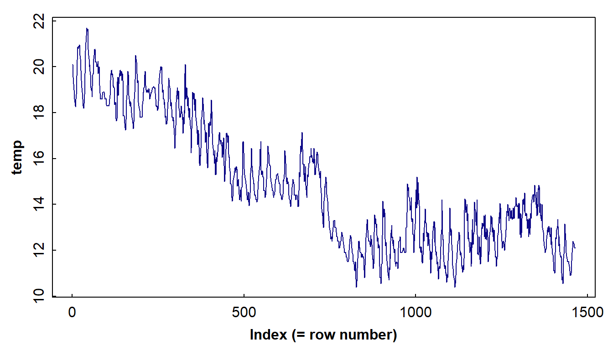
Plot of soil temperature time series data which is not (yet) formatted as a time series.
Reading and storing data as time series
We really want the data in a different type of R object! We use the
read.zoo() function from the zoo package to
read the data in as a time series. This gives a data
object of class zoo which is much more flexible than the
default time series object in R.
We need to specify a format that our date/time information is stored
as. The character string "%Y-%m-%d %H:%M:%S" looks unusual
but it should make sense (%Y is 4-digit year, and so on).
If we have opened and saved our .csv file in Excel, the
format will probably change, so we should try
format = "%d/%m/%Y %H:%M:%S". If in doubt, try to match the
format in the initial data frame (soiltemp in this
example).
soiltemp_zoo <- read.zoo(soiltemp,
format = "%Y-%m-%d %H:%M:%S",
tz = "Australia/Perth",
index.column=1,
header = TRUE)
# do some quick checks of the new R object:
summary(soiltemp_zoo) ; cat("\n")
str(soiltemp_zoo) # POSIXct in the output is a date-time format## Index soiltemp_zoo
## Min. :2014-04-01 00:00:00 Min. :10.40
## 1st Qu.:2014-04-16 05:45:00 1st Qu.:12.45
## Median :2014-05-01 11:30:00 Median :14.30
## Mean :2014-05-01 11:30:00 Mean :14.86
## 3rd Qu.:2014-05-16 17:15:00 3rd Qu.:17.41
## Max. :2014-05-31 23:00:00 Max. :21.70
##
## 'zoo' series from 2014-04-01 to 2014-05-31 23:00:00
## Data: num [1:1464] 20.1 19.8 19.6 19.2 19 ...
## Index: POSIXct[1:1464], format: "2014-04-01 00:00:00" "2014-04-01 01:00:00" "2014-04-01 02:00:00" "2014-04-01 03:00:00" ...We can see that the column Date has now become
Index, and it's correctly stored as date/time information,
in a format called POSIXct (for more information, run
?DateTimeClasses in the Console. Again, it's usually useful
to check our data with a plot (@fig:plot-zoo).
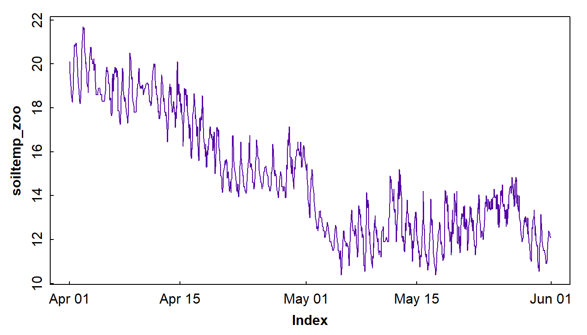
Plot of soil temperature time series data which is formatted as a zoo time series object.
Time Series Regularity
There's something else important we should check - regularity. A time series is regular if the time steps are all the same length, preferably with no missing observations. There are also irregular time series, with unequal time steps, but these can cause problems for some sorts of time series analysis (more on this later). Let's check:
## Time difference of 1 hours## Number of unique differences between observations = 1There
{r} if(length(unique(soiltemp_diffs))==1) "is" else "are"
{r} length(unique(soiltemp_diffs)) unique
{r} if(length(unique(soiltemp_diffs))==1) "difference" else "differences"
between observations, so our time series is
{r} if(length(unique(soiltemp_diffs))==1) "regular." else "irregular."
With a regular series, we can even use the base-R time series format
instead of the more flexible zoo format (bearing in mind
that we will lose the exact time information, since the base-R time
series objects are more limited):
2. Exploratory data analysis and decomposition of time series
This section is designed to help you understand the features and components of time series, and some of the statistical methods that we use to analyse them. We also look at time series decomposition. The important issues are:
- Do we need to transform our time series variable?
- Is our time series stationary?
- Can we separate out a trend in our variable vs. time?
- Is our time series seasonal (periodic) and, if so, what is the periodic frequency?
- Is there significant autocorrelation in our data?
- What is left unexplained after we isolate the trend and periodicity?
Not all of these would need to be presented in a Report, but it's useful for us to understand time series concepts. This is especially true for autocorrelation and moving averages, which both rely [at least partially] on past observations to estimate current observations. From there it follows that we may be able to use past observations to predict future observations – i.e., forecasting.
We first examine a plot of the data in our time series object (which we made above in @fig:plot-zoo).
Plotting the time series variable (with time as the independent variable!) can give us some initial clues about the overall trend in the data (in @fig:plot-zoo, a negative overall slope) and if there is any periodicity (there do seem to be regular increases and decreases in soil temperature).
We often want to inspect plots of both the raw data and using common transformations (@fig:plot-transf). We compare with transformed time series data – we may need to do this to meet later modelling assumptions.
First we change the default plotting parameters using
par(...), then plot the object and some transformed
versions (with custom axis labels).
plot(soiltemp_zoo, ylab = "Temperature (\u00B0C)",
xlab = "Date", col = 2, lwd = 2, cex.lab = 1.4)
plot(log10(soiltemp_zoo),
ylab = expression(bold(paste(log[10],"(Temperature, \u00B0C)"))),
xlab = "Date", col = 3, lwd = 2, cex.lab = 1.4)
pt0 <- powerTransform(coredata(soiltemp_zoo))
if(pt0$lambda<0) {
plot(
-1 * (soiltemp_zoo ^ pt0$roundlam), # use rounded power term
ylab = "power-transf. (Temp., \u00B0C)",
xlab = "Date",
col = 4, lwd = 2, cex.lab = 1.4
)
} else {
plot((soiltemp_zoo ^ pt0$roundlam), # use rounded power term
ylab = "power-transf. (Temp., \u00B0C)",
xlab = "Date",
col = 4, lwd = 2, cex.lab = 1.4
)
}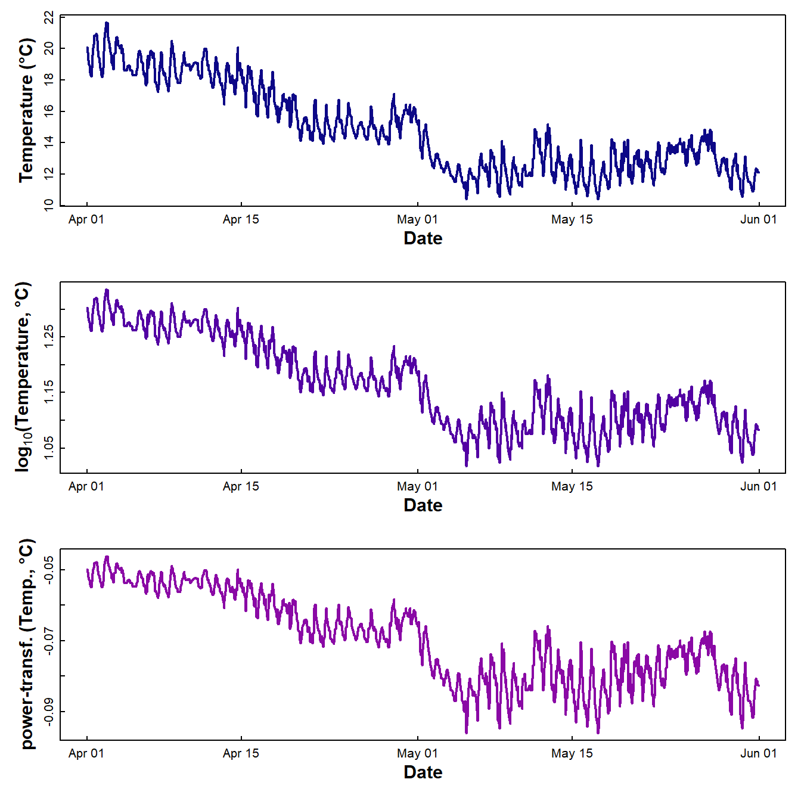
Plots of soil temperature time series data as untransformed, log10-transformed, and power transformed values.
💡 Which of these plots looks like it might be homoscedastic, i.e., have constant variance regardless of time?
The R Cookbook (Long and Teetor, 2019) suggests Box-Cox (power) transforming the variable to "stabilize the variance" (i.e. reduce heteroscedasticity). This does work, but can be better to use log10[variable], as the values are easier to interpret.
There are tests for homoscedasticity, usually based on the residuals from fitting a model (e.g. the Breusch-Pagan test). For our purposes visual assessment is enough.
If we think a transformation is needed, then run something like the
code below (which does a square root transformation, i.e.
variable0.5). This is just an example – we may, for example,
decide that the log10-transformation is more suitable. If we
save the results of powerTransform() to an object, it's
most convenient to use the rounded power term (e.g.
pt0$roundlam).
Assessing if a time series variable is stationary
A stationary variable's mean and variance are not dependent on time. In other words, for a stationary series, the mean and variance at any time are representative of the whole series.
If there is a trend for the value of the variable to increase or decrease, or if there are periodic fluctuations, we don't have a stationary time series.
Many useful statistical analyses and models for time series models need a stationary time series as input, or a time series that can be made stationary with transformations or differencing.
Testing for stationarity
# we need the package 'tseries' for the Augmented Dickey–Fuller (adf) Test
d0 <- adf.test(soiltemp_zoo); print(d0)##
## Augmented Dickey-Fuller Test
##
## data: soiltemp_zoo
## Dickey-Fuller = -3.9515, Lag order = 11, p-value = 0.01141
## alternative hypothesis: stationary##
## Augmented Dickey-Fuller Test
##
## data: diff(soiltemp_zoo, 1)
## Dickey-Fuller = -16.143, Lag order = 11, p-value = 0.01
## alternative hypothesis: stationary##
## Augmented Dickey-Fuller Test
##
## data: diff(diff(soiltemp_zoo, 1), 1)
## Dickey-Fuller = -17.204, Lag order = 11, p-value = 0.01
## alternative hypothesis: stationary
Plot differencing for stationarity
The plots in @fig:plot-diff below show
that constant mean and variance (i.e. stationarity) is achieved
after a single differencing step. The adf.test p-value
suggests that the non-differenced series is already stationary, but the
shape of the first sub-plot in @fig:plot-diff does not seem to support
this.
par(mfrow = c(3,1), mar = c(0,4,0,1), oma = c(4,0,1,0), cex.lab = 1.4,
mgp = c(2.5,0.7,0), font.lab = 2)
plot(soiltemp_zoo, ylab = "Raw data, no differencing",
xlab="", xaxt="n", col = 9)
lines(loess.smooth(index(soiltemp_zoo),coredata(soiltemp_zoo)),
col = 6, lwd = 2)
abline(lm(coredata(soiltemp_zoo) ~ index(soiltemp_zoo)), col = 2)
legend("topright", legend = c("soiltemp data", "Loess smoothing","Linear model"),
cex = 1.8, col = c(9,6,2), lwd = c(1,2,1), bty = "n")
mtext(paste("adf.test p value =",signif(d0$p.value,3)),
side = 1, line = -1.2, adj = 0.05)
plot(diff(soiltemp_zoo,1),
ylab = "First differencing",
xlab="", xaxt="n", col = 9)
abline(h = 0, col = "grey", lty = 2)
lines(loess.smooth(index(diff(soiltemp_zoo,1)),coredata(diff(soiltemp_zoo,1))),
col = 6, lwd = 2)
abline(lm(coredata(diff(soiltemp_zoo,1)) ~
index(diff(soiltemp_zoo,1))), col = 2)
mtext(paste("adf.test p value =",signif(d1$p.value,3)),
side = 1, line = -1.2, adj = 0.05)
plot(diff(diff(soiltemp_zoo,1),1),
ylab = "Second differencing",
xlab="Date", col = 9)
mtext("Date",side = 1, line = 2.2, font = 2)
abline(h = 0, col = "grey", lty = 2)
lines(loess.smooth(index(diff(diff(soiltemp_zoo,1),1)),
coredata(diff(diff(soiltemp_zoo,1),1))),
col = 6, lwd = 2)
abline(lm(coredata(diff(diff(soiltemp_zoo,1))) ~
index(diff(diff(soiltemp_zoo,1)))), col = 2)
mtext(paste("adf.test p value =",signif(d2$p.value,3)),
side = 1, line = -1.2, adj = 0.05)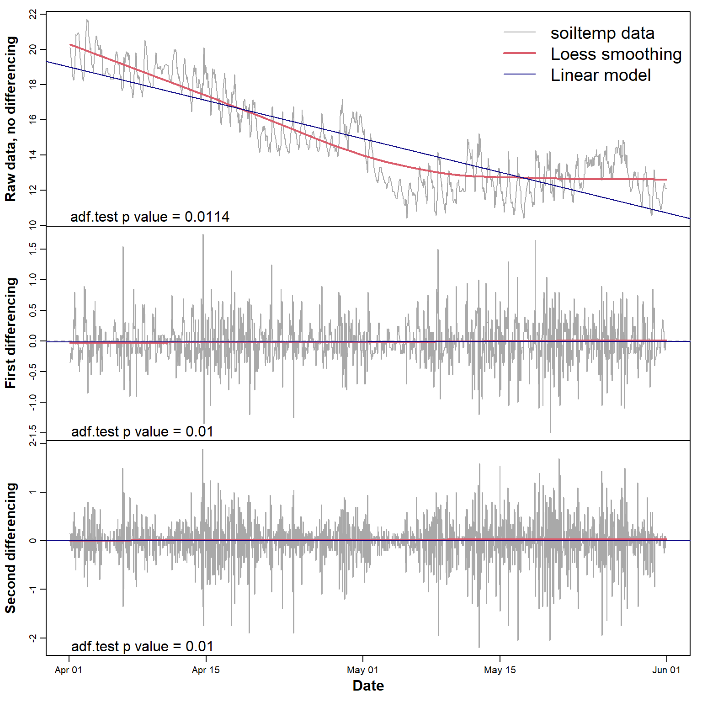
Plots of soil temperature time series data and its first and second differences, with each sub-plot showing the smoothed (Loess) and linear trends.
Finding the trend
A. Visualising a trend using a moving average
We create a new time series from a moving average for each 24 h to
remove daily periodicity using the rollmean() function from
the zoo package. We know these are hourly data with diurnal
fluctuation, so a rolling mean for chunks of length 24 should be OK, and
this seems to be true based on @fig:plot-movAv. For regular time series the
frequency() function can detect the periodic frequency for
us. A moving average will always smooth our data, so a smooth curve
doesn't necessarily mean that we have periodicity (seasonality).
Moving averages are important parts of the ARIMA family of predictive models for time series, and that's why we show them here first.
There are other ways of drawing smooth curves to represent our time series data... see below.
First detect the frequency
ff <- frequency(soilT.ts) # often an approximation!! check the data!
cat("Estimated frequency is",ff,"\n") # multiply by seconds/day## Estimated frequency is 24💡 Try applying
frequency()to thezootime series object. Can you work out what has happened?
soiltemp_movAv <- rollmean(soiltemp_zoo, ff)
plot(soiltemp_zoo, col=9, type="l", xlab="Date", ylab="Temp. (\u00B0C)") # original data
# add the moving average
lines(soiltemp_movAv, lwd = 2, col=2)
legend("topright", bty="n", legend = c("Data",paste("Moving average, \u0192 =", ff)),
col = c(9,2), lwd = c(1,2))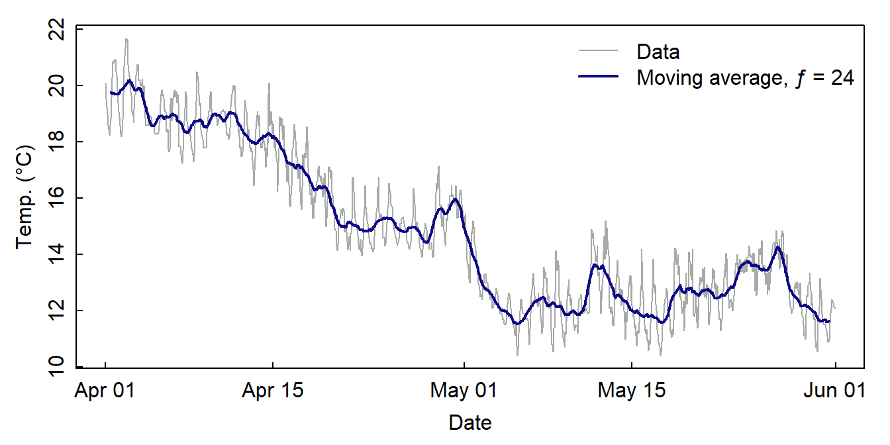
Plots of soil temperature time series data and the 24-hour moving average (ƒ = frequency).
We can use the moving average idea to decompose our time series.
Since the soil temperature time series is regular, we can use the
ts object class from base R (and make a nice plot using
ggplot2):
make a regular time series object
# we have hourly data with daily periodicity
soilT.ts <- ts(soiltemp$temp, frequency = 24, start=c(1,0))
decomp_soilT <- decompose(soilT.ts, type = "additive")
par(mar=c(3,3,1,1), mgp=c(1.7,0.3,0), font.lab=2, col.main="white")
decompDF <- data.frame(Date=index(soiltemp_zoo),
Data=as.vector(decomp_soilT$x),
Seasonal=decomp_soilT$seasonal,
Trend=decomp_soilT$trend,
Error=decomp_soilT$random)
decomp4plot <- reshape2::melt(decompDF, id.vars="Date")
ggplot() +
geom_line(aes(x=Date, y=value, col=variable), data=decomp4plot) +
facet_wrap(vars(variable), scales="free_y", ncol=1) +
labs(y="Soil temperature \u00b0C") +
scale_color_viridis_d(name="Component", option="mako", begin=0.3, end=0.65) +
guides(color="none") +
theme_bw() +
theme(strip.background=element_rect(fill="#e0f8ff"),
strip.text = element_text(size = 11, face="bold"))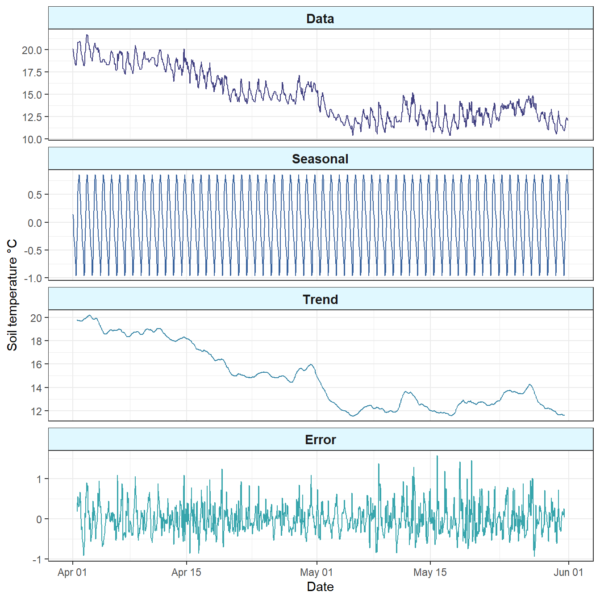
Components of the soil temperature time series obtained by moving average (classical) decomposition. Note the different vertical scales which overemphasise the seasonal and error components.
B. Showing a trend using a linear (regression) model
This is just to visualize the trend. To find if a significant trend exists, we use the Mann-Kendall test or Sen's Slope test as described later. Linear regression is not valid for time series!
First we create a linear model of the time series...
##
## Call:
## lm(formula = coredata(soiltemp_zoo) ~ index(soiltemp_zoo))
##
## Residuals:
## Min 1Q Median 3Q Max
## -3.9217 -1.0968 0.0743 1.0938 3.5318
##
## Coefficients:
## Estimate Std. Error t value Pr(>|t|)
## (Intercept) 2.213e+03 3.370e+01 65.66 <2e-16 ***
## index(soiltemp_zoo) -1.571e-06 2.409e-08 -65.22 <2e-16 ***
## ---
## Signif. codes: 0 '***' 0.001 '**' 0.01 '*' 0.05 '.' 0.1 ' ' 1
##
## Residual standard error: 1.402 on 1462 degrees of freedom
## Multiple R-squared: 0.7442, Adjusted R-squared: 0.744
## F-statistic: 4253 on 1 and 1462 DF, p-value: < 2.2e-16...then use a plot (@fig:linear-trend) to look at the linear relationship.
soiltemp_lmfit <- zoo(lm0$fitted.values, index(soiltemp_zoo))
plot(soiltemp_zoo, col = 9, type = "l", xlab="Date", ylab="Temp. (\u00B0C)")
lines(soiltemp_lmfit, col = 4, lty = 2)
legend("topright", legend = c("Data","Linear trend"), col = c(9,4), lty = c(1,2))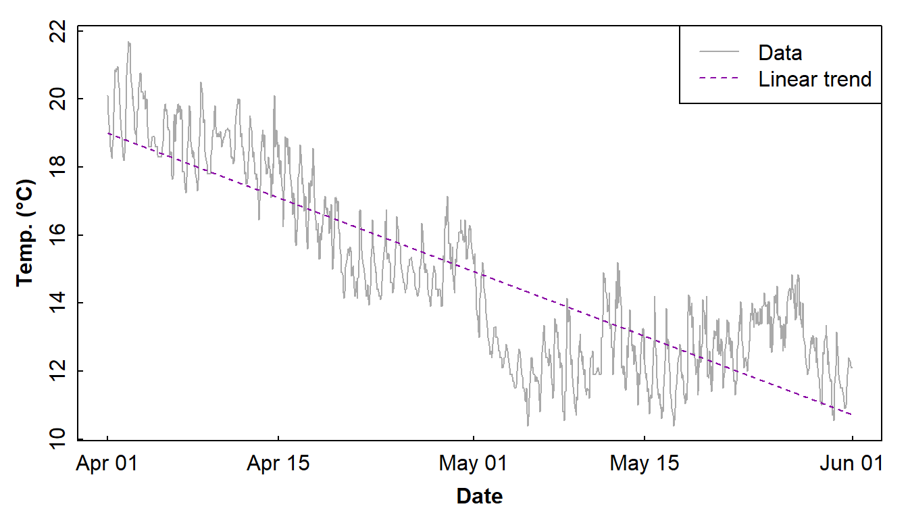
Plots of soil temperature time series data and the overall trend shown by a linear model.
@fig:linear-trend shows that a linear model does not really capture the trend (even without considering the periodicity) very convincingly. Moving averages (or LOESS models, shown below) represent the trend more accurately and, since time series are nearly always autocorrelated, linear models are not statistically valid.
Time series periodicity
NOTE THAT TIME SERIES DON'T ALWAYS HAVE PERIODICITY !
To model the periodicity it is useful to understand the
autocorrelation structure of the time series. We can do this
graphically, first by running the autocorrelation function
acf() which outputs a plot by default (@fig:acf-plot):
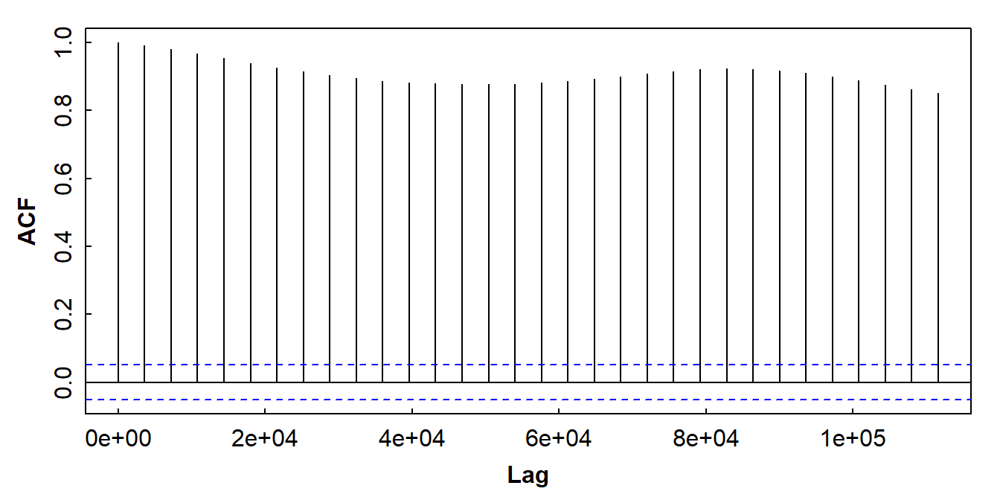
The autocorrelation function plot for soil temperature time series data (the horizontal axis is in units of seconds).
💡 What does @fig:acf-plot tell you about autocorrelation in this time series?
Then inspect the partial autocorrelation function
(pacf())
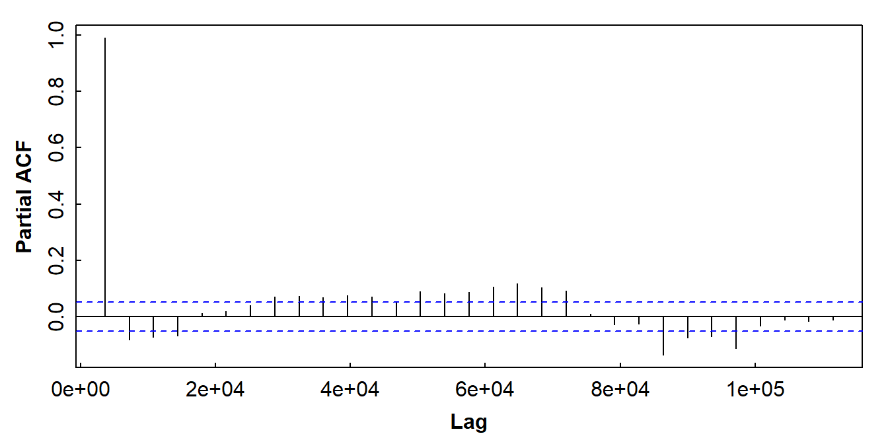
The partial autocorrelation function plot for soil temperature time series data (horizontal axis units are seconds).
Interpreting partial autocorrelations (@fig:pacf-plot) is more complicated – refer to
Long & Teetor (2019, Section 14.15). A
good explanation I've found is from ‘Statistics by Jim’;
“PACF represents
the correlation at each lag that is not already explained by shorter lag
times.”
Partial autocorrelation can allow us to identify which
and how many autocorrelations will be needed to model the time series
data.
Box-Pierce test for autocorrelation
The null hypothesis H0 for the Box-Pierce test
(Box.test())is that no autocorrelation exists at any lag
distance (so p ≤ 0.05 'rejects' H0):
##
## Box-Pierce test
##
## data: soilT.ts
## X-squared = 1436.3, df = 1, p-value < 2.2e-16##
## Box-Pierce test
##
## data: diff(soilT.ts, 1)
## X-squared = 15.658, df = 1, p-value = 7.589e-05##
## Box-Pierce test
##
## data: diff(diff(soilT.ts, 1), 1)
## X-squared = 357.45, df = 1, p-value < 2.2e-16
Using loess smoothing for time series decomposition
We can make use of other base-R built-in functions to decompose
regular time series using loess smoothing. We'll start with the
ts object we made earlier, and apply the stl()
function which implements Seasonal Decomposition
of Time Series by Loess.
[The loess method fits polynomial functions to sections
of x-y type data. The
smoothness of the resulting curve is controlled by how 'wide' the
sections of x-y data
are, defined by a bandwidth parameter.]
We can visualise the STL decomposition simply using
plot(stl_soilT), but here we'll also make a prettier
decomposition plot using ggplot after wrangling the data
into a long-form data frame:
# Seasonal Decomposition of Time Series by Loess
stl_soilT <- stl(soilT.ts, "periodic")
# pull data from stl object
plotdata <- data.frame(Date=index(stl_soilT$time.series),
observed=soiltemp$temp,
trend=stl_soilT$time.series[,2],
seasonal=stl_soilT$time.series[,1],
random=stl_soilT$time.series[,3])
plotdata <- reshape2::melt(plotdata, id.vars = c("Date")) # make long-form
ggplot(data=plotdata) +
geom_line(aes(x=Date, y=value, col=variable)) +
facet_wrap(vars(variable), scales="free_y", ncol=1) +
labs(y="Soil temperature \u00b0C") +
scale_x_continuous(breaks=c(0,20,40,60), labels=c("1 Apr","21 Apr","11 May","31 May")) +
scale_color_viridis_d(name="Component", option="mako", begin=0.3, end=0.65) +
guides(color="none") +
theme_bw() +
theme(strip.background=element_rect(fill="#e0f8ff"),
strip.text = element_text(size = 11, face="bold"))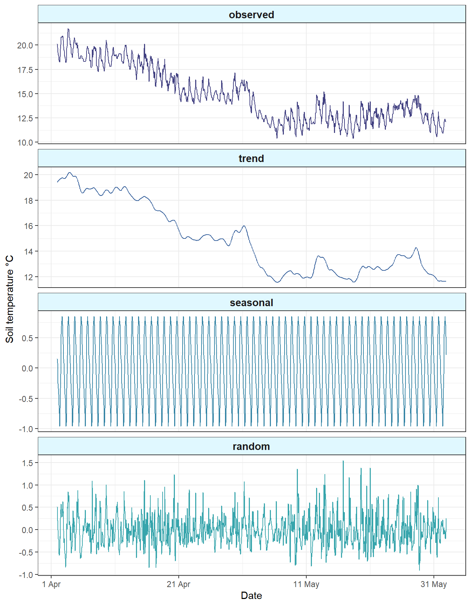
The components of the soil temperature time series obtained by STL (seasonal decomposition of time series by loess).
You might want to compare @fig:stl-decomposition with the
moving-average-based decomposition in @fig:ma-decomposition. Sometimes we can't use
stl() decomposition, for example if we have an irregular
time series. It's possible, with a bit of trial-and-error, to use a
manual loess-based approach to end up with the decomposition we want...
but that's not for here
With the traditional or LTS decomposition results, we're now in a
position to estimate homoscedasticity of our time series. It's not a
formal method and a bit ‘hacky’ 😎, but we can predict the raw time
series from the smoothed trend+periodicity, then apply the Breusch-Pagan
test to our model (we need the lmtest package loaded
earlier for the bptest() function):
pred <- rowSums(stl_soilT$time.series[,1:2])
lm1 <- lm(coredata(soilT.ts) ~ pred)
# slope should be ~ 1; R² should be as high as possible!
cat(paste("slope=",round(lm1$coefficients[2],3),
" R² =",signif(summary(lm1)$adj.r,3)))
bptest(lm1) |> print() ## slope= 1.004 R² = 0.984
## studentized Breusch-Pagan test
##
## data: lm1
## BP = 0.36975, df = 1, p-value = 0.5431The bptest() p-value is > 0.05 so, by this hacky
estimate, our time series is homoscedastic.
We should remember that:
- this time series was relatively easy to decompose into its components, but not all time series will be so 'well-behaved';
- there are different ways in which we can describe the trend and periodicity (we have just used the loess smoothing functions for clear visualization).
This ends
our exploratory data analysis of time series, which leads us into Part
3: Time series models, including trend and ARIMA forecast modelling.
The results of our analyses in Part 3 are the type of outputs
that would typically find their way into reports...
3. Models for Time Series – Trends and Forecasts
Trends and forecasts of time series are the types of analyses we would typically report on (see box below).
Trends in time series
The simplest model for time series is a trend, i.e. an overall increase or decrease. We don't use the usual correlation or regression statistics, as we expect autocorrelation in a time series, so the observations are not independent. We need to use statistical tests that can handle the autocorrelation dependence between observations, and these are described below.
Simply finding whether there is a significant trend, and the direction of that trend (i.e. negative = decreasing, or positive = increasing) may be sufficient from a regulatory perspective.
For example, when monitoring the attenuation of pollution or checking the effectiveness of remediation, showing that the contaminant concentrations are decreasing is important information! (see Australian Government 2023; Department of Water 2015).
(a) Apply the Mann-Kendall test from the 'trend' package
##
## Mann-Kendall trend test
##
## data: coredata(soilT.ts)
## z = -36.387, n = 1464, p-value < 2.2e-16
## alternative hypothesis: true S is not equal to 0
## sample estimates:
## S varS tau
## -6.797270e+05 3.489630e+08 -6.371125e-01The output from mk.test() shows a negative slope
(i.e. the value of S), with the
p-value definitely < 0.05, so we can reject the null
hypothesis of zero slope.
(b) Estimate the Sen's slope
Sen's slope tests for a monotonic trend in the time series.
##
## Sen's slope
##
## data: soilT.ts
## z = -36.387, n = 1464, p-value < 2.2e-16
## alternative hypothesis: true z is not equal to 0
## 95 percent confidence interval:
## -0.005963303 -0.005570410
## sample estimates:
## Sen's slope
## -0.005765595The output from sens.slope() also shows a negative slope
(i.e. the value of Sen's slope at the end of the
output block). Again, the p-value is < 0.05, so we can
reject the null hypothesis of zero slope. The
95 percent confidence interval does not include zero, also
showing that the Sen's slope is significantly negative in this example,
i.e., a monotonic decrease of about
{r} signif(sens.slope(coredata(soilT.ts))$est,2) ° C per
time step (i.e. per
{r} xts::periodicity(soiltemp_zoo)$label).
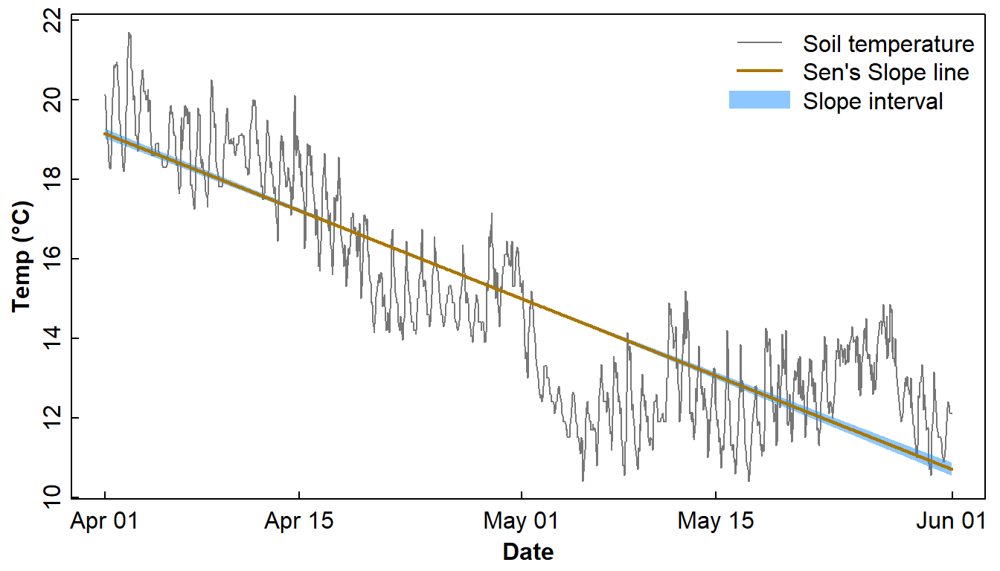
Visualisation of Sen's Slope for the Murrumbidgee 15 cm soil temperature time series. The shaded area around the slope line shows the range of slopes calculated from the 95% confidence interval for the Sen's Slope parameter, rather than being a true regression confidence interval.
💡 Both the Mann-Kendall test and Sen's slope come in seasonal variants. You might like to try these on our data...
Modelling time series with ARIMA
All the analysis of our data before ARIMA is really exploratory data analysis of time series:
- Does our time series have periodicity (seasonality)?
- Can we get the trend with a moving average?
- Does our time series have autocorrelation?
- Can we get stationarity by differencing?
All of these properties are possible components of ARIMA models!
If your time series is not regular, you will need to regularise it
before ARIMA!
This is not always straightforward, but we have some
code to achieve it below.
Use the forecast R package to create an ARIMA
model
## Series: soilT.ts
## ARIMA(2,0,1)(2,1,0)[24] with drift
##
## Coefficients:
## ar1 ar2 ma1 sar1 sar2 drift
## 1.6152 -0.6254 -0.8031 -0.6593 -0.3722 -0.0057
## s.e. 0.0866 0.0821 0.0723 0.0247 0.0245 0.0035
##
## sigma^2 = 0.1174: log likelihood = -505.06
## AIC=1024.11 AICc=1024.19 BIC=1061.02The auto.arima() function runs a complex algorithm
(Hyndman et al. 2020) to automatically select the best ARIMA
model on the basis of the Aikake Information Criterion
(AIC), a statistic which estimates how much information is 'lost' in the
model compared with reality. The AIC combines how well the model
describes the data with a 'penalty' for increased complexity of the
model. Using AIC, a better fitting model might not be selected if it has
too many predictors. The best ARIMA models will have the
lowest AIC (or AICc) value.
Use output of auto.arima() to run arima
The auto-arima() algorithm is not perfect! – but it does
provide a starting point for examining ARIMA models. The output of the
auto-arima() function includes a description of the best
model the algorithm found, shown as ARIMA(p,d,q). The
p,d,q are defined in
Table 1 below:
Table 1: Definition of p, d, and q parameters in ARIMA time series forecasting models.
Parameter Meaning Info 1 p The number of autoregressive predictors Partial autocorrelation 2 d The number of differencing steps Stationarity tests ± differencing 3 q The number of moving average predictors Stationarity tests ± moving averages
A periodic or seasonal ARIMA model (often called SARIMA) has
a more complex specification:
ARIMA(p,d,q)(P,D,Q)(n) ,
where the additional
parameters refer to the seasonality: P is the number of
seasonal autoregressive predictors, D the seasonal
differencing, Q the seasonal moving averages, and
n is the number of time steps per period/season.
(a) ARIMA with no seasonality
Note that we use the function Arima() from the
forecast package rather than arima() from base
R.
We are not including a differencing term d in
c(p,d,q), so we specify include.drift = TRUE
to capture the decreasing trend.
## Series: soilT.ts
## ARIMA(2,0,1) with drift
##
## Coefficients:
## ar1 ar2 ma1 intercept drift
## 1.6406 -0.6596 -0.5486 19.0127 -0.0056
## s.e. 0.0587 0.0567 0.0639 0.4131 0.0005
##
## sigma^2 = 0.117: log likelihood = -505.62
## AIC=1023.24 AICc=1023.3 BIC=1054.97
##
## Training set error measures:
## ME RMSE MAE MPE MAPE MASE ACF1
## Training set -0.0007798756 0.3414518 0.2465467 -0.05866044 1.720319 0.4030965 -0.02838122
## 2.5 % 97.5 %
## ar1 1.525463623 1.755758719
## ar2 -0.770816261 -0.548414536
## ma1 -0.673811498 -0.423440105
## intercept 18.203060238 19.822252832
## drift -0.006594356 -0.004687105The output from summary(am0) shows the values and
uncertainties of the model parameters
(ar1, ma1, ma2, ma3, intercept), the goodness-of-fit
parameters (we're interested in aic – the lower the
better).
Note: ar parameters are auto-regression
coefficients, and ma are moving average coefficients.
The output from confint(am0) is a table showing the 95%
confidence interval for the parameters. The confidence intervals should
not include zero! (if so, this would mean we can't be sure if the
parameter is useful or not; this is probably not so critical for the
intercept, which is probably not useful anyway).
(b) ARIMA with seasonality
ff <- frequency(soilT.ts)
cat("Estimated time series frequency is",ff,"\n")
am1 <- Arima(soilT.ts, order = c(2,0,1),
seasonal = list(order = c(1, 0, 1), period = ff),
include.drift = TRUE)
summary(am1)
confint(am1)## Estimated time series frequency is 24
## Series: soilT.ts
## ARIMA(2,0,1)(1,0,1)[24] with drift
##
## Coefficients:
## ar1 ar2 ma1 sar1 sma1 intercept drift
## 1.7587 -0.7600 -0.9009 0.9997 -0.9851 18.8550 -0.0055
## s.e. 0.0389 0.0385 0.0263 0.0004 0.0116 3.1134 0.0011
##
## sigma^2 = 0.08953: log likelihood = -339.78
## AIC=695.56 AICc=695.66 BIC=737.87
##
## Training set error measures:
## ME RMSE MAE MPE MAPE MASE ACF1
## Training set -0.003814522 0.2984933 0.2151072 -0.06179006 1.49042 0.3516939 -0.02411026
## 2.5 % 97.5 %
## ar1 1.682372463 1.834952197
## ar2 -0.835474211 -0.684537381
## ma1 -0.952490340 -0.849264978
## sar1 0.998957877 1.000537319
## sma1 -1.007803761 -0.962463467
## intercept 12.752799961 24.957202804
## drift -0.007531811 -0.003374783Note: sar parameters are seasonal
auto-regression coefficients, and sma are seasonal
moving average coefficients.
Note that we have not simply accepted the output of
auto.arima when formulating the seasonal ARIMA model. It's
probably a good idea to use the output of auto.arima as a
starting point to adjust p,d,q and P,D,Q one
by one, being informed by our exploratory data analysis. For example,
our analysis in @fig:plot-diff showed that
the time series was stationary without differencing, so d
and D were set to zero.
The model which includes periodicity has the lowest AIC value (which
is not surprising, since the soil temperature data have clear
periodicity). Note that the drift or slope parameter is
essentially the same in both models; we would be surprised if it wasn't,
as the choice of model shouldn't affect the trend.
Checking residuals using the checkresiduals() function
from the forecast package is our best diagnostic tool to
assess the validity of our models. [This is a separate issue from how
well the model describes the data, measured by AIC. Also, we can't use
bptest() to analyse ARIMA residuals.]
In the output (plot and text) from checkresiduals(): -
the residual plot (top) should look like white noise - the residuals
should not be autocorrelated (bottom left plot) - the p-value from the
Ljung-Box test should be > 0.05 (text output) - the residuals should
be normally distributed (bottom right plot)
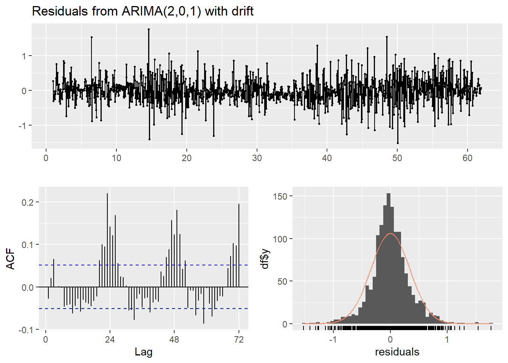
Residual diagnostic plots for a non-seasonal ARIMA model of the soil temperature time series.
##
## Ljung-Box test
##
## data: Residuals from ARIMA(2,0,1) with drift
## Q* = 369.96, df = 45, p-value < 2.2e-16
##
## Model df: 3. Total lags used: 48
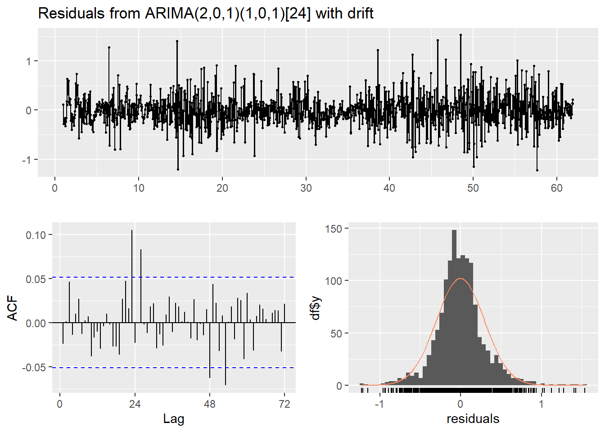
Residual diagnostic plots for a seasonal ARIMA (SARIMA) model of the soil temperature time series.
##
## Ljung-Box test
##
## data: Residuals from ARIMA(2,0,1)(1,0,1)[24] with drift
## Q* = 62.137, df = 43, p-value = 0.02951
##
## Model df: 5. Total lags used: 48
In both the diagnostic plots (@fig:diagnostic-arima and @fig:diagnostic-sarima) the residuals appear to be random and normally distributed. There seems to be a more obvious autocorrelation of residuals for the non-seasonal model, reinforcing the conclusion from the AIC value that the seasonal ARIMA model is the most appropriate.
Looking at how well (or not) the (S)ARIMA models fit the actual data
In @fig:fitted-arima-lines (below) we
can see how well the ARIMA and seasonal ARIMA models fit the data (for
clarity, only one week of hourly observations are plotted, otherwise
there is a lot of overlap). The ARIMA objects am0 and
am1 don't contain the fitted values, but they do contain
model residuals so we calculate
fitted = observed - residual in each case.
Note that a non-seasonal ARIMA model can still capture periodicity by making predictions based just on autocorrelation and moving averages. The fit of both the ARIMA and SARIMA models to the actual data seems similar based on these plots; we see how the models differ below, when we try to use the models for forecasting.
# vector of row numbers = 1 week (168 hours) - WON'T WORK FOR OTHER DATSETS!
rz <- c(721:888)
par(mar=c(3,3.5,0.5,0.5), mgp=c(1.6,0.3,0), tcl=0.2, font.lab=2, cex.lab=1.4,
cex.axis=1.2, lend="square", mfrow=c(2,1))
palette(c("black", plasma(4, end=0.5),plasma(4, alpha=0.5, begin=0.5),"white"))
plot(soilT.ts[rz], type="n", lwd=1, xlab="Date", ylab="Soil temperature (\u00b0C)")
lines(index(soilT.ts[rz]), coredata(soilT.ts[rz])-am0$residuals[rz],
col=6, lwd=5)
points(soilT.ts[rz], type="p", col=2, pch=3)
mtext("(a)",3,-1.5, adj=0.98, cex=1.4)
legend("bottomleft", box.col="grey", legend=c("Observed data","ARIMA model"),
pch=c(3,NA), lwd=c(NA,3), lty=c(NA,1),
col=c(2,6), inset=0.02, cex=1.4)
plot(soilT.ts[rz], type="n", lwd=1, xlab="Date",
ylab="Soil temperature (\u00b0C)")
lines(index(soilT.ts[rz]), coredata(soilT.ts[rz])-am1$residuals[rz],
col=7, lwd=5)
points(soilT.ts[rz], type="p", col=2, pch=3)
legend("bottomleft", box.col="grey", legend=c("Observed data", "Seasonal ARIMA model"),
pch=c(3,NA), lwd=c(NA,3), lty=c(NA,1), col=c(2,7), inset=0.02, cex=1.4)
mtext("(b)",3,-1.5, adj=0.98, cex=1.4)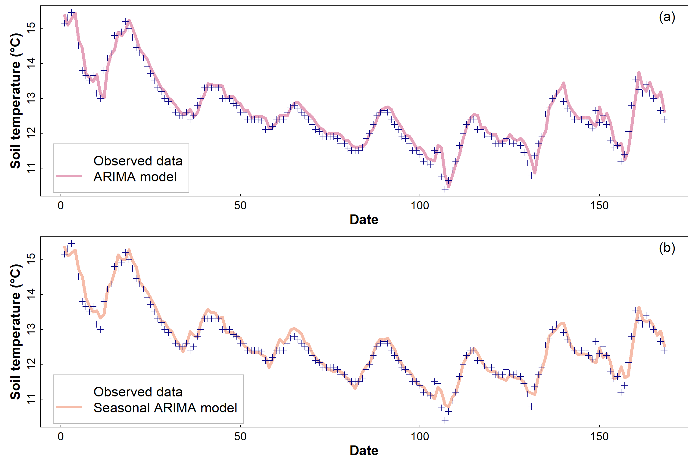
Soil temperature data for the first week of May 2014, showing (a) the fitted ARIMA model and (b) the fitted SARIMA (seasonal) model. The thickness of the fitted lines in both (a) and (b) is arbitrary and does not represent model uncertainty.
Use the ARIMA model to produce a forecast using both models
The whole point of generating ARIMA models is so that we can attempt to forecast the future trajectory of our time series based on our existing time series data.
To do this, we use the appropriately named forecast()
function from the forecast package. The option
h = is to specify how long we want to forecast for after
the end of our data – in this case 168 hours (same units as the
periodicity from findfrequency()), that is, one week.
One of the problems we often run into is the issue of irregular time series, where the observations are not taken at regularly-spaced time intervals. Features of time series, such as periodicity and the length of time we want to forecast for, may be incorrect if our time series is irregular.
It is possible to "fill in" a time series so we have observations regularly spaced in time, using interpolation or numerical filtering methods. We cover one of these methods here.
Then, look at forecasts with plots
par(mfrow = c(2, 1), cex.main = 0.9, mar = c(0,3,0,1), oma = c(3,0,1,0),
mgp=c(1.6,0.3,0), tcl=0.2, font.lab=2)
plot(fc0,ylab = "Temperature (\u00B0C)",
fcol = 2, xlab="", main = "", xaxt="n")
lines(soilT.ts, col = "grey70")
mtext("ARIMA with drift and no seasonality", 1, -2.2, adj = 0.1, font = 2)
mtext(am0$call, 1, -1, adj = 0.1, col = 2, cex = 0.9,
family="mono", font = 2)
mtext("(a)", 3, -1.2, cex = 1.2, font = 2, adj = 0.98)
plot(fc1,ylab = "Temperature (\u00B0C)", main = "", fcol = 4)
lines(soilT.ts, col = "grey70")
mtext("Time since start (days)", 1, 1.7, cex = 1.2, font = 2)
mtext(paste("ARIMA with drift and",am1$arma[5],"h periodicity"),
side = 1, line = -2.2, adj = 0.1, font = 2)
mtext(am1$call, 1, -1, adj = 0.1, col = 4, cex = 0.9, family="mono")
mtext("(b)", 3, -1.2, cex = 1.2, font = 2, adj = 0.98)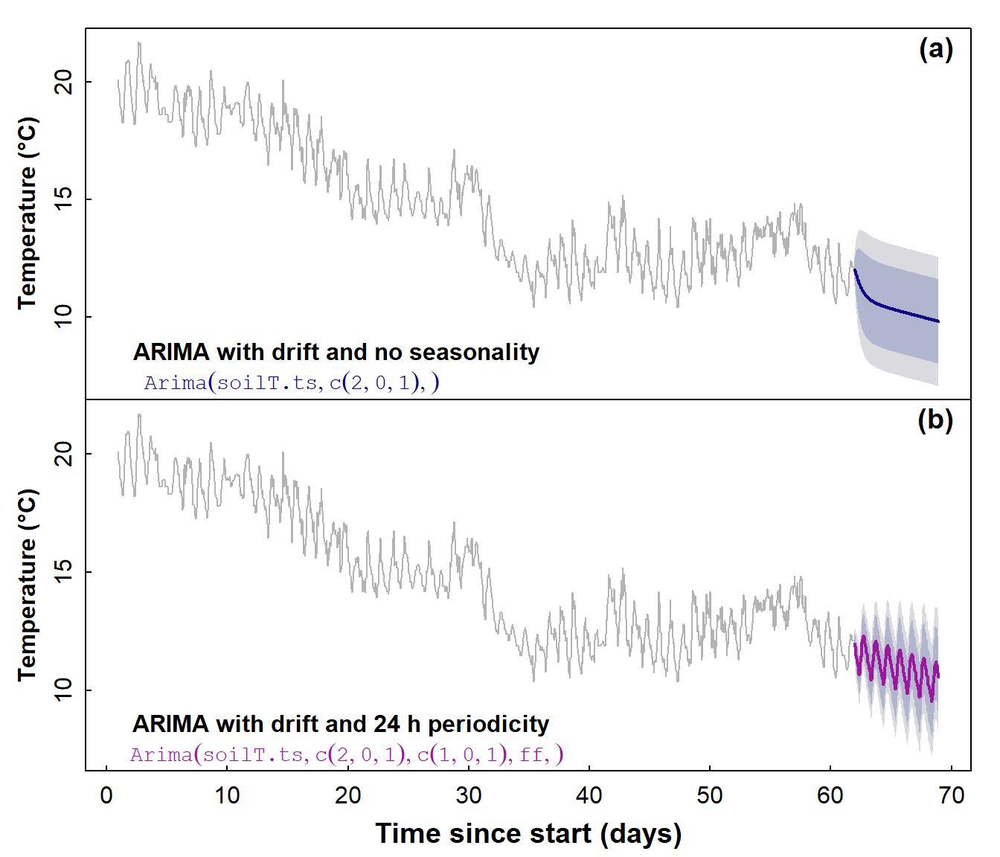
Time series forecasts for soil temperature, based on (a) a non-seasonal ARIMA model and (b) a seasonal ARIMA model.
From the two plots in @fig:forecast-plots, we observe that the seasonal ARIMA model seems to reflect the form of the original data much better, by simulating the diurnal fluctuations in soil temperature. Although the forecasting uncertainty shown by the shaded area in @fig:forecast-plots is large for both types of ARIMA model, the interval seems smaller for the seasonal ARIMA model (@fig:forecast-plots(b)).
The actual forecasted values are in the forecast objects
(fc0 and fc1) which we can see the layout of
by running str(fc0) or str(fc1):
## Time Series:
## Start = c(61, 24)
## End = c(62, 9)
## Frequency = 24
## [1] 12.03482 11.96547 11.89458 11.82392 11.75463 11.68747 11.62288 11.56111 11.50225 11.44634# use as.vector(...) to strip metadata
as.vector(fc0$mean[(length(fc0$mean)-9):length(fc0$mean)]) # last 10 predictions## [1] 9.857788 9.852145 9.846502 9.840859 9.835216 9.829574 9.823931 9.818289 9.812647 9.807005## 80% 95%
## [1,] 11.596483 11.364442
## [2,] 11.316431 10.972850
## [3,] 11.077621 10.645148
## [4,] 10.866994 10.360430
## [5,] 10.679463 10.110302
## [6,] 10.511828 9.889479
## [7,] 10.361589 9.693900
## [8,] 10.226632 9.520204
## [9,] 10.105125 9.365529
## [10,] 9.995469 9.227422## 80% 95%
## [1,] 12.47316 12.70520
## [2,] 12.61451 12.95809
## [3,] 12.71154 13.14402
## [4,] 12.78084 13.28740
## [5,] 12.82980 13.39897
## [6,] 12.86312 13.48547
## [7,] 12.88418 13.55187
## [8,] 12.89558 13.60201
## [9,] 12.89938 13.63898
## [10,] 12.89722 13.66526We can also make a slightly 'prettier' time series forecast plot
using the autoplot() function from the ggplot2
package (@fig:forecast-ggplot):
require(ggplot2) # gives best results using autoplot(...)
autoplot(fc1)+
ylab("Temperature (\u00B0C)") +
xlab(paste("Time since",index(soiltemp_zoo)[1],"(days)")) +
ggtitle("") +
theme_bw()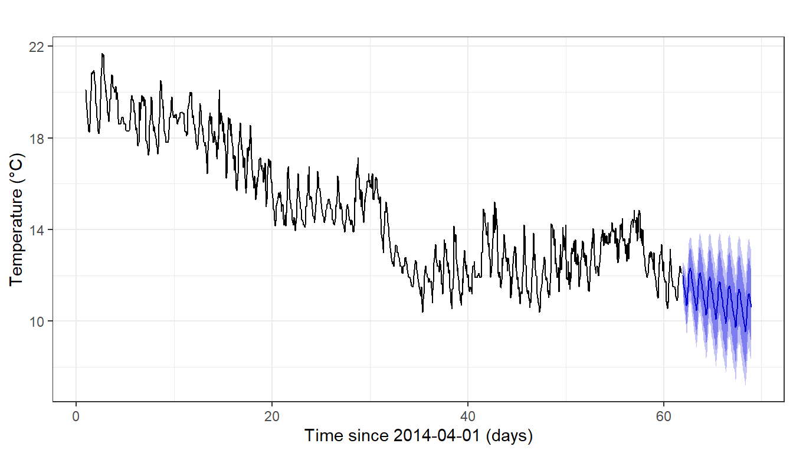
Time series forecast for soil temperature, based on a seasonal ARIMA
model, plotted using the ggplot2 autoplot()
function.
Go to Appendix 1: Regularising Time Series
Appendix 2: Exponential Smoothing Models
ARIMA models are not the end of the time series modelling and forecasting story!
Sometimes, ARIMA models may not be the best option, and another commonly used method is exponential smoothing. (There are plenty of other time series modelling options, too, including wavelet decomposition and numerous machine learning methods.)
Check help(forecast::ets) to correctly specify the model
type using the model = option!
The easiest option (and the one used here) is to specify
model = "ZZZ", which chooses the type of model
automatically.
## ETS(A,Ad,A)
##
## Call:
## ets(y = soilT.ts, model = "ZZZ")
##
## Smoothing parameters:
## alpha = 0.7899
## beta = 0.0014
## gamma = 1e-04
## phi = 0.9283
##
## Initial states:
## l = 19.3959
## b = 0.0128
## s = 0.2866 0.3955 0.5325 0.7205 0.7867 0.8477
## 0.7651 0.6735 0.5277 0.1865 -0.1292 -0.3341 -0.6664 -0.9131 -0.9449 -0.727 -0.6052 -0.4901 -0.4515 -0.3626 -0.2598 -0.1141 0.084 0.1919
##
## sigma: 0.3029
##
## AIC AICc BIC
## 7204.499 7205.797 7363.167
##
## Training set error measures:
## ME RMSE MAE MPE MAPE MASE ACF1
## Training set -0.006568918 0.2998711 0.2156329 -0.06919197 1.495891 0.3525534 0.04976849In this case the ets() function has automatically
selected a model (ETS(A,Ad,N)) with additive trend and
errors, but no seasonality. We don't do it here (it generates an
error!), but we could manually select a model with seasonality
included.
The default plot function in R can plot forecasts from exponential smoothing models too (@fig:ets-forecast).
par(mfrow = c(1,1), mar = c(3,3,1,1), mgp=c(1.6,0.3,0), tcl=0.25, oma = c(0,0,0,0), font.lab=2)
plot(forecast(soiltemp_ets, h=168), col=2, fcol=4,
xlab = "Time since start (days)", ylab = "Temperature (\u00B0C)", main="")
text(rep(51,6), seq(21.5,16,l=6),labels=names(soiltemp_ets$par)[1:6],
pos=2, col = 3, font = 8)
text(rep(62,6),seq(21.5,16,l=6),signif(soiltemp_ets$par[1:6],3),
pos=2,col = 3, font = 8)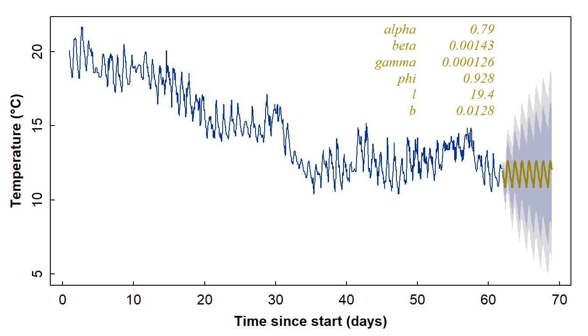
Forecast of soil temperature based on an automatically selected exponential smoothing model without a seasonal component.
Exponential smoothing also decomposes time series in a different way, into level and slope components (@fig:ets-decomposition).
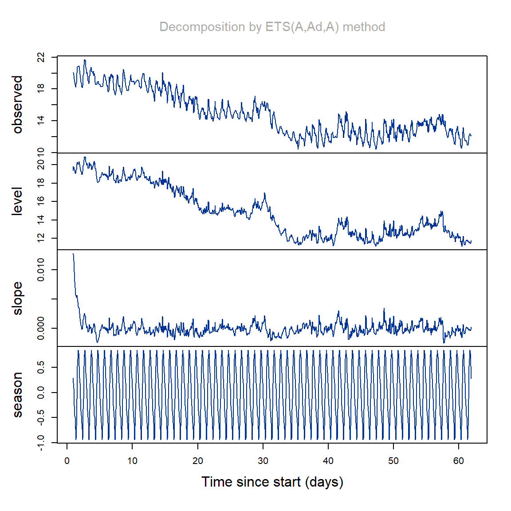
Exponential smoothing time series decomposition plots for soil temperature data.
(Exponential smoothing is probably not so good for the soil temperature data!)
References
Australian Government (2023). Assessment of change through monitoring data analysis, In Australian & New Zealand Guidelines for Fresh and Marine Water Quality, www.waterquality.gov.au/anz-guidelines/monitoring/data-analysis/data-assess-change.
Department of Water (2015). Calculating trends in nutrient data, Government of Western Australia, Perth. www.wa.gov.au/.../calculating-trends-nutrient-data.
Hyndman R, Athanasopoulos G, Bergmeir C, Caceres G, Chhay L,
O'Hara-Wild M, Petropoulos F, Razbash S, Wang E, Yasmeen F (2022).
forecast: Forecasting functions for time
series and linear models. R package version 8.17.0, http://pkg.robjhyndman.com/forecast/.
Long, J.D., Teetor, P., 2019. Time series analysis. Chapter 14, The R Cookbook, Second Edition https://rc2e.com/timeseriesanalysis.
R Core Team (2026). R: A language and environment
for statistical computing. R Foundation for Statistical Computing,
Vienna, Austria. URL https://www.R-project.org/.
Smith, A. B., Walker, J. P., Western, A. W., Young, R. I., Ellett, K. M., Pipunic, R. C., Grayson, R. B., Siriwidena, L., Chiew, F. H. S. and Richter, H. (2012) The Murrumbidgee Soil Moisture Monitoring Network Data Set. Water Resources Research, 48:W07701 doi:10.1029/2012WR011976
Zeileis, A. and Grothendieck, G. (2005). zoo: S3
Infrastructure for Regular and Irregular Time Series. Journal of
Statistical Software, 14(6), 1-27. doi:10.18637/jss.v014.i06
CC-BY-SA • All content by Ratey-AtUWA. My employer does not necessarily know about or endorse the content of this website.
Created with rmarkdown in RStudio. Currently using the free yeti theme from Bootswatch.